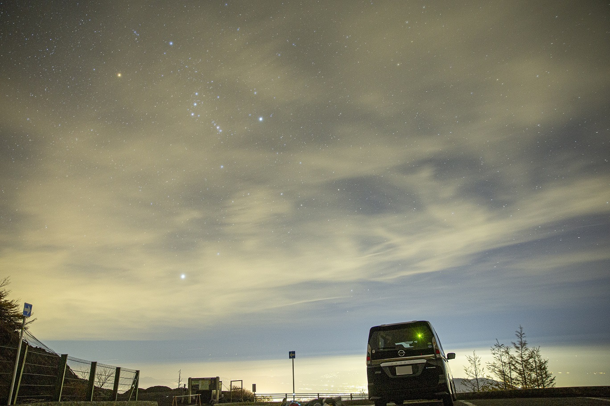
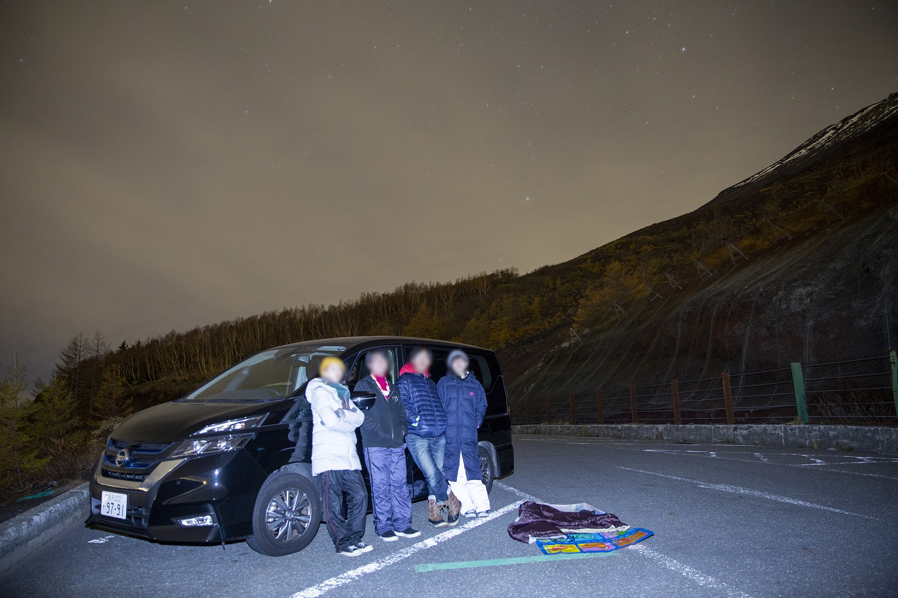
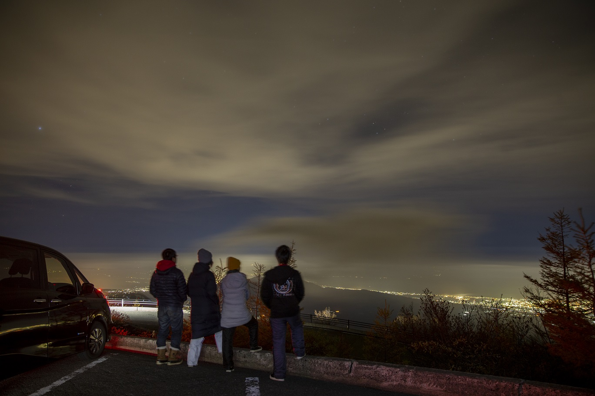
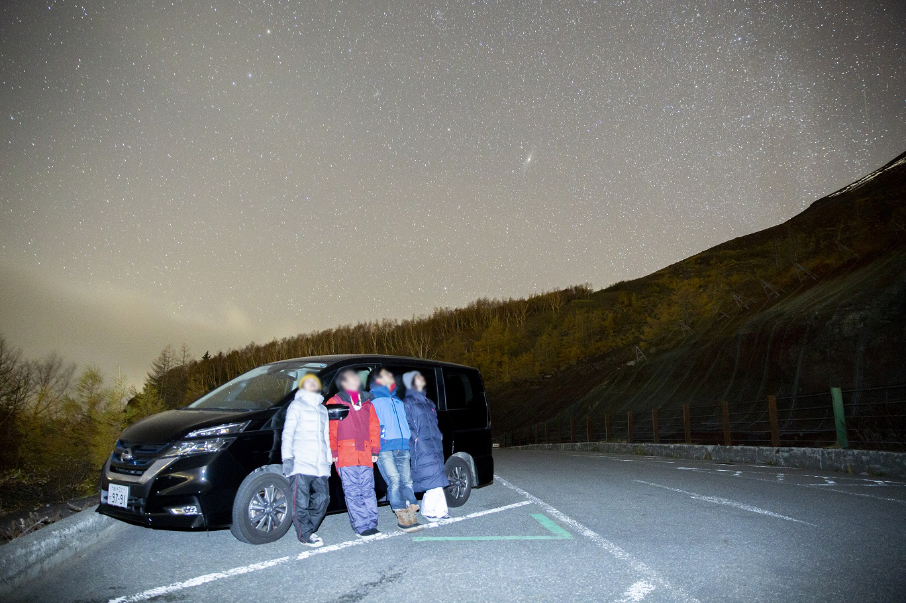
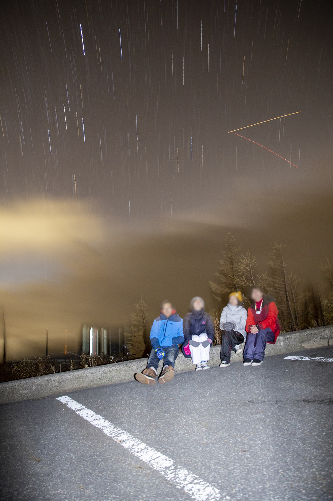
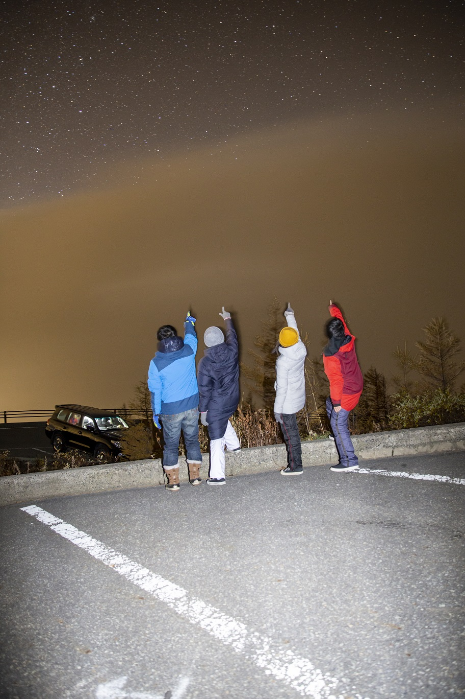
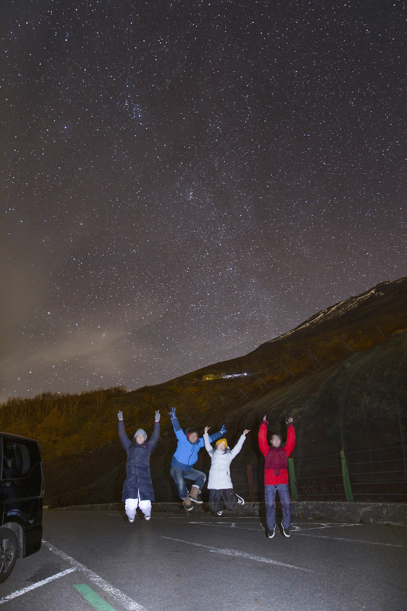
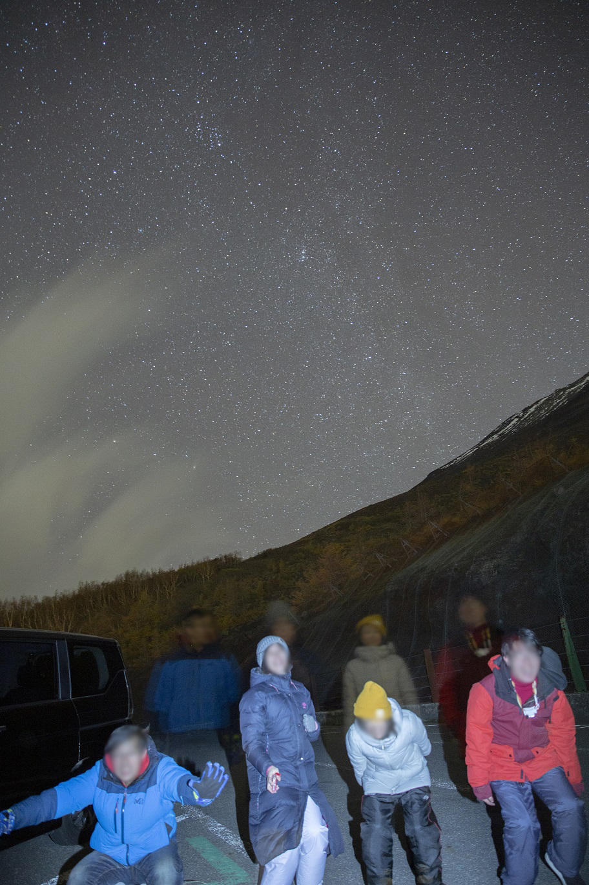
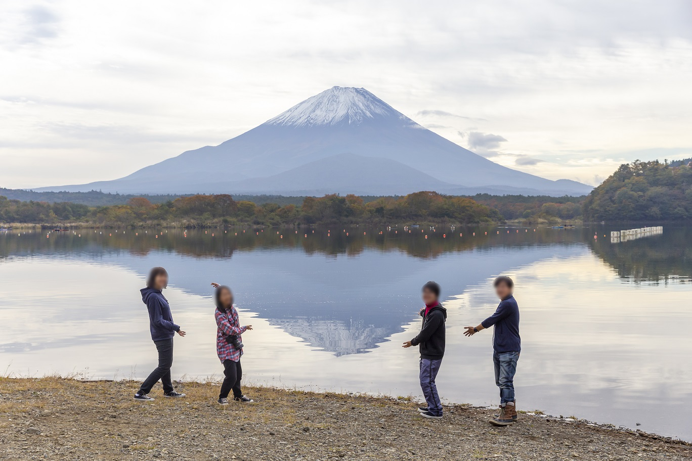

<!DOCTYPE html>
<html>

<head><meta name="generator" content="Hexo 3.8.0">
  <meta charset="utf-8">
  
  <title>【遠征記】2019年11月 富士宮口五合目（初ストロボ星景） | ほしよみ大学生のブログ</title>
  <meta name="viewport" content="width=device-width">
  <meta name="description" content="あいさつこんにちは．先日の11月2日から3日にかけてサークルの後輩と富士宮口五合目に行ったので，その遠征記を早速記しておきたいと思います．今回は初めてストロボを使った星景写真にもチャレンジしてみました．">
<meta name="keywords" content="写真,天体写真,遠征記">
<meta property="og:type" content="article">
<meta property="og:title" content="【遠征記】2019年11月 富士宮口五合目（初ストロボ星景）">
<meta property="og:url" content="http://dabokun.github.io/2019/11/03/00000025-2019-11-fuji5th/index.html">
<meta property="og:site_name" content="ほしよみ大学生のブログ">
<meta property="og:description" content="あいさつこんにちは．先日の11月2日から3日にかけてサークルの後輩と富士宮口五合目に行ったので，その遠征記を早速記しておきたいと思います．今回は初めてストロボを使った星景写真にもチャレンジしてみました．">
<meta property="og:locale" content="ja">
<meta property="og:image" content="http://dabokun.github.io/2019/11/03/00000025-2019-11-fuji5th/card.jpg">
<meta property="og:updated_time" content="2019-11-04T06:56:24.786Z">
<meta name="twitter:card" content="summary_large_image">
<meta name="twitter:title" content="【遠征記】2019年11月 富士宮口五合目（初ストロボ星景）">
<meta name="twitter:description" content="あいさつこんにちは．先日の11月2日から3日にかけてサークルの後輩と富士宮口五合目に行ったので，その遠征記を早速記しておきたいと思います．今回は初めてストロボを使った星景写真にもチャレンジしてみました．">
<meta name="twitter:image" content="http://dabokun.github.io/2019/11/03/00000025-2019-11-fuji5th/card.jpg">
<meta name="twitter:creator" content="@dabo_pic">
  
  <link rel="alternative" href="/atom.xml" title="ほしよみ大学生のブログ" type="application/atom+xml">
  
  
  <link rel="icon" href="/images/favicon.png">
  
  <link rel="stylesheet" href="/css/style.css">
  <!--[if lt IE 9]><script src="//html5shiv.googlecode.com/svn/trunk/html5.js"></script><![endif]-->
  
</head></html>
<body>
  <div id="container">
    <div class="mobile-nav-panel">
	<i class="icon-reorder icon-large"></i>
</div>
<header id="header">
	<h1 class="blog-title">
		<a href="/">ほしよみ大学生のブログ</a>
	</h1>
	<nav class="nav">
		<ul>
			<li><a href="/">Home</a></li><li><a href="/categories">Categories</a></li><li><a href="/tags">Tags</a></li><li><a href="/archives">Archives</a></li><li><a href="/about">About</a></li><li><a href="/work">Work</a></li>
			<li><a id="nav-search-btn" class="nav-icon" title="Search"></a></li>
			<li><a href="https://github.com/dabokun"></a>
			</li>
			<li><a href="https://twitter.com/dabo_pic"></a></li>
			<li><a href="/atom.xml" id="nav-rss-link" class="nav-icon" title="RSS Feed"></a>
			</li>
		</ul>
	</nav>
	<div id="search-form-wrap">
		<form action="//google.com/search" method="get" accept-charset="UTF-8" class="search-form"><input type="search" name="q" class="search-form-input" placeholder="Search"><button type="submit" class="search-form-submit">&#xF002;</button><input type="hidden" name="sitesearch" value="http://dabokun.github.io"></form>
	</div>
</header>
    <div id="main">
      <article id="post-00000025-2019-11-fuji5th" class="post">
	<footer class="entry-meta-header">
		<span class="meta-elements date">
			<a href="/2019/11/03/00000025-2019-11-fuji5th/" class="article-date">
  <time datetime="2019-11-03T13:57:32.000Z" itemprop="datePublished">2019-11-03</time>
</a>
		</span>
		<span class="meta-elements author">astr0dab0</span>
		<div class="commentscount">
			
			<a href="http://dabokun.github.io/2019/11/03/00000025-2019-11-fuji5th/#disqus_thread" class="article-comment-link">Comments</a>
			
		</div>
	</footer>
	
	<header class="entry-header">
		
  
    <h1 class="article-title entry-title" itemprop="name">
      【遠征記】2019年11月 富士宮口五合目（初ストロボ星景）
    </h1>
  

	</header>
	<div class="entry-content">
		
		
		<div id="toc" class="toc-article">
			<p class="toc-title">目次</p>
			<ol class="toc"><li class="toc-item toc-level-3"><a class="toc-link" href="#あいさつ"><span class="toc-number">1.</span> <span class="toc-text">あいさつ</span></a></li><li class="toc-item toc-level-3"><a class="toc-link" href="#富士宮口五合目へ"><span class="toc-number">2.</span> <span class="toc-text">富士宮口五合目へ</span></a></li><li class="toc-item toc-level-3"><a class="toc-link" href="#ストロボ星景にチャレンジ"><span class="toc-number">3.</span> <span class="toc-text">ストロボ星景にチャレンジ</span></a><ol class="toc-child"><li class="toc-item toc-level-4"><a class="toc-link" href="#ストロボを使うメリット"><span class="toc-number">3.1.</span> <span class="toc-text">ストロボを使うメリット</span></a></li><li class="toc-item toc-level-4"><a class="toc-link" href="#ストロボを使うデメリット"><span class="toc-number">3.2.</span> <span class="toc-text">ストロボを使うデメリット</span></a></li></ol></li><li class="toc-item toc-level-3"><a class="toc-link" href="#余談（トイレについて）"><span class="toc-number">4.</span> <span class="toc-text">余談（トイレについて）</span></a></li><li class="toc-item toc-level-3"><a class="toc-link" href="#朝霧→精進湖→温泉からの帰還"><span class="toc-number">5.</span> <span class="toc-text">朝霧→精進湖→温泉からの帰還</span></a></li></ol>
		</div>
		
		<h3 id="あいさつ"><a href="#あいさつ" class="headerlink" title="あいさつ"></a>あいさつ</h3><p>こんにちは．先日の11月2日から3日にかけてサークルの後輩と富士宮口五合目に行ったので，その遠征記を早速記しておきたいと思います．<br>今回は初めてストロボを使った星景写真にもチャレンジしてみました．</p>
<a id="more"></a>
<h3 id="富士宮口五合目へ"><a href="#富士宮口五合目へ" class="headerlink" title="富士宮口五合目へ"></a>富士宮口五合目へ</h3><p>本来この日は予報もダメダメだったので，戦場ヶ原へ行って紅葉でも見ようかという話をしていたのですが，<a href="https://twitter.com/AstronomyPisuke" target="_blank" rel="noopener">ピースケさん</a>の以下のツイートを見て，急遽判断を変更．</p>
<div class="twitter-wrapper"><blockquote class="twitter-tweet"><a href="https://twitter.com/AstronomyPisuke/status/1190556453146247168" target="_blank" rel="noopener"></a></blockquote></div><script async defer src="//platform.twitter.com/widgets.js" charset="utf-8"></script>
<p>まだ首都高に乗る手前だったので，東名方向に舵を切りました．東名に入る手前，三軒茶屋あたりまでは渋滞していましたが，なんとか抜け，海老名SAで夕飯と好例の鴨肉（海老名SA下りの屋台に鴨肉ロースを売っているお店があるんですがこれが最高にうまい）を食べ，御殿場で下りてコンビニに寄り，五合目へ向かいました．途中，大井松田～御殿場の左ルートが工事で封鎖されていたため渋滞していましたが，それ以外はある程度スムーズに行くことができました．この工事は12月20日頃まで続く予定なので，注意すべきですね．</p>
<h3 id="ストロボ星景にチャレンジ"><a href="#ストロボ星景にチャレンジ" class="headerlink" title="ストロボ星景にチャレンジ"></a>ストロボ星景にチャレンジ</h3><p>到着してみると，予報は高層雲だらけでダメダメだったにも関わらず星が見えるではありませんか！</p>
<p></p>
<p>薄雲は出ていたので今回は直焦はせず，眺めたり星景写真を撮って遊ぶことに．気温は2℃くらいで，風も出ていたのでめちゃくちゃ寒いです．すぐに防寒をして，カメラの準備をしました．<br>後輩の<a href="https://twitter.com/yoshito4441" target="_blank" rel="noopener">りかじん</a>がストロボを持ってきていたので，なるべく人の少ないところを選んでコレを借りて写真を撮影することにしました．<br>天体写真を撮る人には，「明るい光を発する」ということで車のライト同様あまり好ましく思われないかもしれないストロボですが，うまく使えば色々と面白い表現ができます．ストロボを使わない場合，星景写真は数十秒の露光だけで光を集めることになります．そのため人のいる地上景は黒く落ちやすく，その細かい表情などを判別することは難しいです．また，面白いポーズをキメたい時は数十秒間静止する力が求められます．新星景写真を撮るような場合では，ストロボを使わない場合は地上景が暗いので，なるべく高感度で枚数を撮るため撮影時間がとられてしまいます．これを一気に解決するのがストロボです．<br>百聞は一見にしかずなので，色々と作例を載せていきます．<br><br><br><br></p>
<p><br>到着した時にテストで撮影したものです．この時にはもう雲がかなり出始めていたので，星はあまり見えませんが，地上の人物や景色はストロボの効果で明るく詳細に描写できていることがわかります．<br><br><br><br></p>
<p><br>薄雲の下に広がる街を眺めているところです．先程よりは少し暗めですが，これもストロボを使っています．<br><br><br><br></p>
<p><br>一枚目と似たような構図で，秋の夜空を眺めます．地上にいる人物もそうですが，秋の天の川やアンドロメダ銀河もしっかりと写っていることがわかります．<br><br><br><br></p>
<p><br>三脚を使った面白い失敗例．上下を固定するネジがレンズの重さに耐えられず緩んでゆっくりと下に落ち，まるでを星を流して撮ったようになっていますね．背景に少しおかしなところはありますが，地上の人間は割としっかり写っています．「30分間このポーズで座ってたんですよ～ｗ」などとぬかしても一瞬信じてもらえそうです．<br><br><br><br></p>
<p><br>先ほどと同じ場所で．星が見えたぞ！ということで雲の上を指差しているところです．<br><br><br><br></p>
<p><br>極めつけはこのジャンプ．星が見えた喜びを全力で体現した一枚です．数十秒間，空中に浮いていたわけではないですよ？無線ボタンでストロボを発光させるのが確実ですが，今回はそれができなかったのでストップウォッチを使ってタイミングを測っていっせーの！で飛んでいます．何度も失敗しました．右側で一番飛べてないのが僕です笑．<br><br><br><br></p>
<p><br>こちらは何度もした失敗の中で生まれた一枚．最初からカメラの前に棒立ちしていたので，まるで幽体離脱したようになっています．ちょっと怖い．<br><br><br><br></p>
<p>いかがでしょうか．目で見た暗さをそのまま表現するという意味では，ストロボはオススメできませんが，ポートレートと同様人物の表情や一瞬の躍動感，喜びなどを生みたい時は，使ってみると面白い表現ができるんだなあとわかりました．</p>
<p>以下にストロボを使うメリット，デメリットをまとめてみます．</p>
<h4 id="ストロボを使うメリット"><a href="#ストロボを使うメリット" class="headerlink" title="ストロボを使うメリット"></a>ストロボを使うメリット</h4><ul>
<li>人物の表情などが詳細に表現できるため，当時の感情が伝わりやすい．</li>
<li>通常の写真と同様一瞬を切り取ることができるので，躍動感のある写真を撮ることができる．</li>
<li>シャッターを開けっぱにする数十秒間の間の静止力は必要ない．</li>
<li>新星景写真を撮る際，そこまで地上景を高感度で撮る必要がない．一発撮りでも十分耐えられるのではないかと思う．</li>
</ul>
<h4 id="ストロボを使うデメリット"><a href="#ストロボを使うデメリット" class="headerlink" title="ストロボを使うデメリット"></a>ストロボを使うデメリット</h4><ul>
<li>一瞬でも明るい光を発するので（それでも車のヘッドライトに比べればずっとマシだと思う），周りに撮影をしている人がいる場合はできない．避けるべき．</li>
<li>被写体がストロボの方を向いている場合，暗順応が一瞬にして破壊されるので，観望中である場合は特に注意．本当に眩しい．</li>
<li>その場の「暗さ」が伝わらない．</li>
<li>地上景もある程度明るく写るため，編集段階（二値マスクなど）で星空との分離がやりにくいかもしれない．</li>
</ul>
<p>こんなところでしょうか？とにかく，用法用量を守れば，うまいこと面白い写真を撮ることができます．ストロボを使ってアマチュアで撮っている方はあまり見かけないので，皆さんもチャレンジしてみてはいかがでしょうか？</p>
<h3 id="余談（トイレについて）"><a href="#余談（トイレについて）" class="headerlink" title="余談（トイレについて）"></a>余談（トイレについて）</h3><p>富士宮口五合目はたしかにダメダメ予報でしたが，Windyは3時頃に高層雲が消えるチャンスがあることを告げていたので，この時には星を眺めたいねぇという話をしていました．<br>富士宮口五合目には山道を100mほど進んだところを含めてトイレが三箇所あります．観望中，後輩の女性陣がトイレに行き，男二人は湯を沸かしてうどんを食らっていたのですが，なんと女性陣二人が絶望的な顔をして帰ってきました．</p>
<p>「トイレ全部閉まってる…」</p>
<p>二時半のことでした．<br>普通に僕らもトイレに行きたかったのですぐに撤収し，山を下り始めました．このままでは3時の晴れに間に合わない！<br>すると捨てる神あれば拾う神あり．山道を9km弱下ったところに公衆トイレがあるではありませんか．開いてるか確認してみると，身体障害者用のトイレだけが使用でき，水もちゃんと使えたのでありがたく使わさせてもらいました．管理人の方の慈悲なのでしょうか，とてもありがたかったです．<br>山道を急いで駆け上がり，3時ギリギリに到着．先程の秋の夜空を眺めている場面は，実はトイレから帰ってきたあとだったりします笑．</p>
<h3 id="朝霧→精進湖→温泉からの帰還"><a href="#朝霧→精進湖→温泉からの帰還" class="headerlink" title="朝霧→精進湖→温泉からの帰還"></a>朝霧→精進湖→温泉からの帰還</h3><p>一通り遊んでから，明け方までは朝霧高原までのんびり下って過ごすことにしました．というのも，他のサークルの後輩は朝霧にいるようだったのです．が，早めにほったらかし温泉の方面に向かってしまったようで会うことはかないませんでした．残念．<br>9時頃まで朝霧高原で仮眠をとり，精進湖で記念撮影．この日は波がそれなりに穏やかで，鏡富士っぽいものを見ることができました．</p>
<p></p>
<p>その後，近場の<a href="https://www.fuji-yurari.jp/" target="_blank" rel="noopener">富士眺望の湯ゆらり</a>さんで温泉に入って，帰りました．ここはとても人気が高いようで，自分らが出発した11時頃には駐車場はほとんどいっぱいになっていました．1500円なので学生には少し割高かもでしたが，たくさんの種類の温泉やサウナ，休憩所などがあり，良かったです．</p>
<p>今回，日産eシェアモビを使ってセレナを借りたのですが，四人で行ったにも関わらず費用は一人5000円を切るくらいになりまして，それもとても良かったですね（おそらくトヨタレンタカーなどで同クラスのボクシーなどを借りると倍ほどかかります）．</p>
<p>今回は，トイレのドタバタやストロボ星景を含めコンテンツ性がとても高く，久々に「仲間と行く観測旅行」を全力で楽しんだ感じがしました．<br>サークルを引退して思うのは，一緒にこうしてふらっと星見旅行に行ってくれる仲間がいるのはとても貴重で，仲間がいることで，一回ごとの遠征の思い出の質が自分の中で高くなるな，と思うのです．今回来てくれた女性二人は寒いのがとても苦手なので，暖かくなったらまた行こうと言って解散しました．また春に行けるといいな．</p>
<p>それでは．</p>

		
	</div>
	<footer class="article-footer">
		<a href="https://twitter.com/intent/tweet?text=%E3%80%90%E9%81%A0%E5%BE%81%E8%A8%98%E3%80%912019%E5%B9%B411%E6%9C%88%20%E5%AF%8C%E5%A3%AB%E5%AE%AE%E5%8F%A3%E4%BA%94%E5%90%88%E7%9B%AE%EF%BC%88%E5%88%9D%E3%82%B9%E3%83%88%E3%83%AD%E3%83%9C%E6%98%9F%E6%99%AF%EF%BC%89｜%E3%81%BB%E3%81%97%E3%82%88%E3%81%BF%E5%A4%A7%E5%AD%A6%E7%94%9F%E3%81%AE%E3%83%96%E3%83%AD%E3%82%B0&url=http://dabokun.github.io/2019/11/03/00000025-2019-11-fuji5th/" class="twitter-share-button" target="_blank" title="Twitter"></a>
		<script async src="https://platform.twitter.com/widgets.js" charset="utf-8"></script>

		<div id="fb-root"></div>
		<script async defer crossorigin="anonymous" src="https://connect.facebook.net/ja_JP/sdk.js#xfbml=1&version=v4.0"></script>
		<div class="fb-share-button" data-href="http://dabokun.github.io/2019/11/03/00000025-2019-11-fuji5th/" data-layout="button_count" data-size="small"><a target="_blank" href="https://www.facebook.com/sharer/sharer.php?u=https%3A%2F%2Fdabokun.github.io%2F&amp;src=sdkpreparse" class="fb-xfbml-parse-ignore">シェア</a></div>
	</footer>
	<footer class="entry-footer">
		<div class="entry-meta-footer">
			<span class="category">
				
  <div class="article-category">
    <a class="article-category-link" href="/categories/expedition/">遠征記</a>
  </div>

			</span>
			<span class=" tags">
				
  <ul class="article-tag-list"><li class="article-tag-list-item"><a class="article-tag-list-link" href="/tags/photography/">写真</a></li><li class="article-tag-list-item"><a class="article-tag-list-link" href="/tags/astrophotography/">天体写真</a></li><li class="article-tag-list-item"><a class="article-tag-list-link" href="/tags/expedition/">遠征記</a></li></ul>

			</span>
		</div>
	</footer>
	
	
<nav id="article-nav">
  
    <a href="/2019/11/28/00000026-music-for-today-only/" id="article-nav-newer" class="article-nav-link-wrap">
      <strong class="article-nav-caption">Newer</strong>
      <div class="article-nav-title">
        
          【坂本真綾】今日だけの音楽を聴いて
        
      </div>
    </a>
  
  
    <a href="/2019/11/01/00000024-ifu-2019-report/" id="article-nav-older" class="article-nav-link-wrap">
      <strong class="article-nav-caption">Older</strong>
      <div class="article-nav-title">
        
          面分光研究会2019で発表してきました
        
      </div>
    </a>
  
</nav>

	
</article>


<section id="comments">
	<div id="disqus_thread">
		<noscript>Please enable JavaScript to view the <a href="//disqus.com/?ref_noscript">comments powered by
				Disqus.</a></noscript>
	</div>
</section>

    </div>
    <div class="mb-search">
  <form action="//google.com/search" method="get" accept-charset="utf-8">
    <input type="search" name="q" results="0" placeholder="Search">
    <input type="hidden" name="q" value="site:dabokun.github.io">
  </form>
</div>
<footer id="footer">
	<h1 class="footer-blog-title">
		<a href="/">ほしよみ大学生のブログ</a>
	</h1>
	<span class="copyright">
		&copy; 2020 astr0dab0<br>
		Modify from <a href="http://sanographix.github.io/tumblr/apollo/" target="_blank">Apollo</a> theme, designed by <a href="http://www.sanographix.net/" target="_blank">SANOGRAPHIX.NET</a><br>
		Powered by <a href="http://hexo.io/" target="_blank">Hexo</a>
	</span>
</footer>
    
<script>
  var disqus_shortname = 'astr0dab0';
  
  var disqus_url = 'http://dabokun.github.io/2019/11/03/00000025-2019-11-fuji5th/';
  
  (function(){
    var dsq = document.createElement('script');
    dsq.type = 'text/javascript';
    dsq.async = true;
    dsq.src = '//go.disqus.com/embed.js';
    (document.getElementsByTagName('head')[0] || document.getElementsByTagName('body')[0]).appendChild(dsq);
  })();
</script>


<script src="//ajax.googleapis.com/ajax/libs/jquery/2.0.3/jquery.min.js"></script>


<link rel="stylesheet" href="/fancybox/jquery.fancybox.css" media="screen" type="text/css">
<script src="/fancybox/jquery.fancybox.pack.js"></script>


<script src="/js/script.js"></script>
  </div>
</body>
</html>